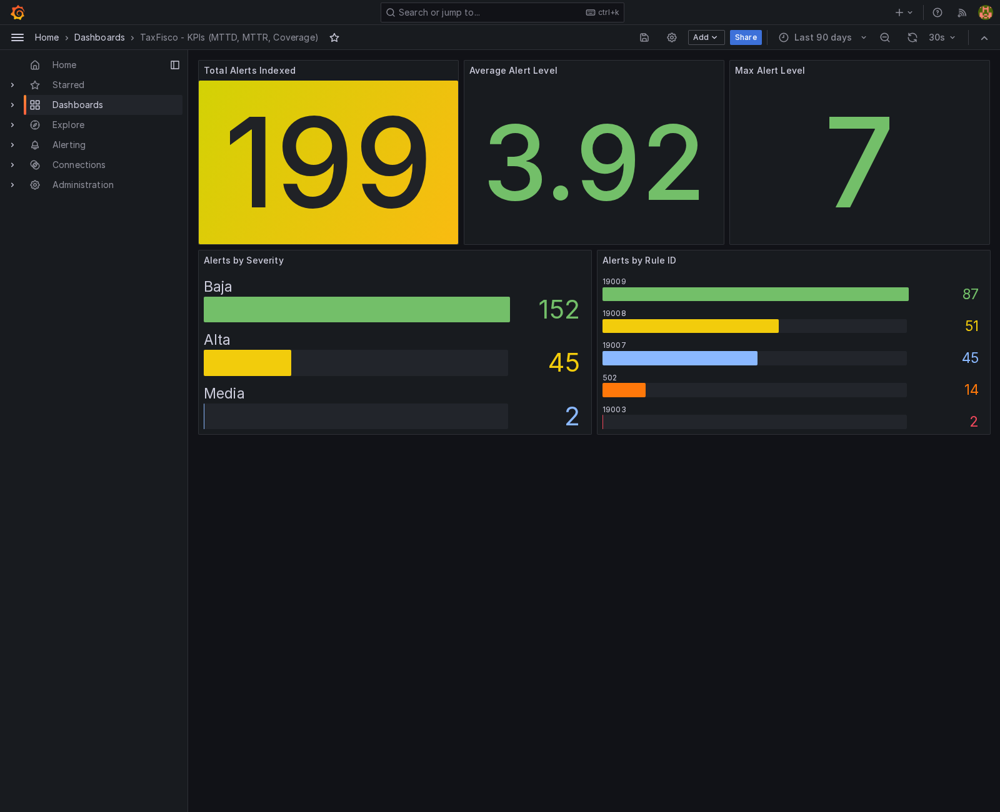

A. Cómo leer este tablero
Antes de entrar en las cifras conviene declarar de dónde sale cada una, porque los tres bloques de datos que aparecen aquí no miden lo mismo y no admiten una lectura sobre un mismo eje. El tablero los presenta por separado y los enlaza por la metodología, que es la misma en los tres.
| Bloque | Qué mide | Archivo de origen | Naturaleza del dato |
|---|---|---|---|
| Diagnóstico institucional previo | Madurez declarada por la organización antes de la intervención | 2026-06-25_Calculo_Alfa_Cronbach_Encuesta_v05.xlsx, hoja «Resultados de madurez» |
Medida sobre treinta respondentes reales. Alfa de Cronbach 0,868989. |
| Prototipo 1 | Ejecución instrumentada en el laboratorio TaxFisco | evidencias/07-metricas/ del repositorio |
Verificada sobre archivos de evidencia |
| Prototipo 2 | Ejecución instrumentada en el laboratorio SIN | evidencias/v2.0-it1/ y evidencias/v2.1-it2/ |
Verificada sobre archivos de evidencia |
Las fuentes de resultado que declara el tablero
| Fuente | Resultado | Naturaleza del dato | Respaldo disponible |
|---|---|---|---|
| Laboratorio · Prototipo 1 | 9 de 10 escenarios medidos | Ejecución verificada sobre archivos de evidencia | Reporte de indicadores y reporte de cobertura de técnicas |
| Laboratorio · Prototipo 2 | 10 de 10 escenarios medidos | Ejecución verificada sobre archivos de evidencia | Reportes de indicadores de las dos iteraciones |
| Laboratorio · Prototipo 2 | Percentil 95 de 9,266 s | Ejecución verificada sobre archivos de evidencia | Reporte de indicadores de la segunda iteración |
B. Diagnóstico institucional previo
La medición inicial recogió la madurez declarada por la organización antes de la intervención. Treinta personas responden el instrumento de catorce subdimensiones con cuarenta y dos reactivos. El resultado global se sitúa en el nivel Gestionado de la escala de cortes.
Los catorce instrumentos de la línea base
| Grupo | Instr. | Subdimensión | Reactivos | Línea base | Nivel |
|---|---|---|---|---|---|
| Global | 14 | Madurez de los catorce instrumentos | 42 | 52,70 % | Gestionado |
D. Prototipo 1 · Resultados del laboratorio TaxFisco
La primera aplicación comprueba que cada componente de la cadena opera por separado. El laboratorio ejecutó una sola medición, el catorce de septiembre de 2026, de manera que no existe comparación interna entre dos vueltas.
Condiciones de la medición
| Laboratorio | TaxFisco Research Lab |
| Entidad | Homologada del rubro de servicios fiscales digitales |
| Fecha del reporte | 2026-09-14T07:31:44Z |
| Método de cálculo | Tiempo desde el inicio del escenario hasta el primer evento que lo registra |
| Escenarios ejecutados | 10 |
| Escenarios con medición | 9 |
| Duración del ciclo de medición | Una sola vuelta, con la evidencia de la ejecución completa y verificada |
| Escenario | Técnica | Tiempo | Fuente que lo registra |
|---|---|---|---|
| S01 · Reconocimiento activo | T1595 | 16,405 s | Interfaz de servicios, vista del atacante |
| S02 · Escaneo web | T1595.002 | 0,826 s | Portal del señuelo |
| S03 · Fuerza bruta por acceso remoto | T1110.001 | 85,000 s | Emulador de acceso remoto |
| S04 · Inyección de consultas | T1190 | 260,108 s | Interfaz de servicios |
| S05 · Suplantación de credenciales | T1110.004 | 0,141 s | Interfaz de servicios |
| S06 · Inyección en el navegador | T1059.007 | 0,824 s | Interfaz de servicios |
| S07 · Abuso de la interfaz | T1078 | 0,543 s | Interfaz de servicios, registro de ruta |
| S08 · Depósito de archivo | T1105 | 0,533 s | Interfaz de servicios, registro de ruta |
| S09 · Conexión inversa | T1059.004 | 10,000 s | Emulador de acceso remoto |
| S10 · Exfiltración por nombres de dominio | T1048.003 | fuera de la medición | Ninguna fuente lo registró |
Distribución del tiempo de detección
El tramo por debajo de un segundo reúne cinco de los nueve escenarios y concentra el comportamiento típico del laboratorio, mientras que los dos escenarios de larga duración elevan la media hasta 41,598 segundos sin alterar esa lectura.
Componentes que registran detección
El reporte declara cinco componentes que registran la detección, de manera que cada barra indica cuántos de los nueve escenarios medidos aporta cada uno de ellos a la cadena de alerta.
Técnicas del inventario por táctica
El inventario del señuelo comprende diecisiete técnicas repartidas en ocho tácticas. La campaña activa diez de esas técnicas y cada escenario ejerce una distinta.
Contenedores por segmento de red
El despliegue verificado distribuye treinta contenedores en cuatro segmentos separados, de manera que el señuelo expuesto no comparte segmento con la gestión ni con los sensores.
Segmentación verificada del señuelo
| Red | Subred | Contenedores | Función del segmento |
|---|---|---|---|
taxfisco-dmz | 10.20.0.0/24 | 6 | Segmento del señuelo expuesto |
taxfisco-honeypot | 10.21.0.0/24 | 3 | Segmento interior del señuelo |
taxfisco-soc | 10.22.0.0/24 | 19 | Segmento de gestión y análisis |
taxfisco-ids | 10.23.0.0/24 | 2 | Segmento de los sensores de red |
Cobertura normativa que el laboratorio sustenta
| Marco | Fase o control | Evidencia en el laboratorio |
|---|---|---|
| ISO/IEC 27035 | Fase 1 · Planificar y preparar | Gestor de eventos preconfigurado, plantillas de casos, flujos de orquestación, caceras previas y reglas propias de red |
| ISO/IEC 27035 | Fase 2 · Detección y reporte | Reglas de correlación del gestor, firmas del motor de red, registros del sensor y señuelos instrumentados |
| ISO/IEC 27035 | Fase 3 · Evaluación y decisión | Gestión de casos, analizadores de inteligencia, correlación de indicadores y flujos de enriquecimiento |
| ISO/IEC 27035 | Fase 4 · Respuesta | Recetas de contención, caceras de aislamiento, distribución de indicadores y segmentación de redes |
| ISO/IEC 27035 | Fase 5 · Lecciones aprendidas | Informes de cierre de caso, tablero de indicadores y actualización de reglas desde la observación |
| ISO/IEC 27001 | Controles de gestión de incidentes | Planificación, evaluación, respuesta, aprendizaje y preservación de la evidencia |
| ISO/IEC 27001 | Controles de monitoreo y red | Actividades de monitoreo y seguridad de las redes |
Los indicadores del Prototipo 1 y su denominador
| Indicador | Qué cuenta | Denominador | Archivo de origen |
|---|---|---|---|
| Escenarios ejecutados | Escenarios que la campaña lanza contra el señuelo | Los diez escenarios que define la campaña | Reporte de indicadores |
| Escenarios con medición | Escenarios a los que el instrumental atribuye una detección y registra su hora | Los diez escenarios que ejecuta la campaña | Reporte de indicadores |
| Tiempo mediano de detección | Valor que ordena los nueve tiempos medidos y toma el central | Las nueve mediciones disponibles | Reporte de indicadores |
| Tiempo medio de detección | Promedio aritmético de los nueve tiempos medidos | Las nueve mediciones disponibles | Reporte de indicadores |
| Detección por debajo de un minuto | Escenarios cuyo tiempo de detección no supera los sesenta segundos | Los diez escenarios que ejecuta la campaña | Reporte de indicadores |
| Técnicas con detección | Técnicas que un escenario activa y que reciben fuente de atribución | Las diez técnicas que activa la campaña | Reporte de cobertura |
| Tácticas con detección | Tácticas del marco que cubren esas técnicas | Las seis tácticas que la campaña recorre | Reporte de cobertura |
| Componentes que registran detección | Componentes que dejan un registro legible por el calculador | Los cinco declarados en el reporte | Reporte de indicadores |
| Calidad de la evidencia | Puntuación de integridad verificada sobre los archivos con huella | Los sesenta y ocho archivos de evidencia | Reporte de indicadores |
| Segmentos de red verificados | Redes del señuelo con composición efectiva inspeccionada | Las cuatro redes declaradas | Captura de aislamiento |
Volumen registrado en la ejecución
E. Prototipo 1 · El puente entre los dos laboratorios
Los dos prototipos se necesitan entre sí. El primero comprueba que cada componente opera por separado. El segundo comprueba qué mejora produce corregir los vacíos que el primero deja ver.
La conexión más clara es el escenario S10. En el primer laboratorio la exfiltración por nombres de dominio no produjo tiempo de detección, porque el cálculo solo consultaba tres fuentes y ninguna leía el tráfico DNS. El registro de lecciones del segundo laboratorio recoge ese mismo hallazgo en la lección L14, cuya corrección añade la consulta DNS como fuente. En la medición final de ese segundo laboratorio el mismo escenario registra 0,646 segundos con el sensor de red como fuente.
| Escenario | Prototipo 1 | Prototipo 2, medición final | Qué cambió |
|---|---|---|---|
| S10 · Exfiltración por nombres de dominio | fuera de la medición | 0,646 s | La fuente DNS del sensor de red entra en el cálculo |
| S08 · Depósito de archivo | 0,533 s | 0,562 s | El archivo señuelo pasa a ser fuente propia |
| S09 · Conexión inversa | 10,000 s | 0,000 s | El emulador de acceso remoto queda verificado desde el arranque |
F. Prototipo 2 · Las dos vueltas del laboratorio SIN
La metodología transformó el instrumental de medición, no el señuelo. El señuelo ejecutó los mismos diez escenarios en las dos vueltas con las mismas técnicas, de modo que la diferencia entre las columnas corresponde al trabajo de la metodología.
Cobertura de la medición, en valores absolutos
Lectura del cambio
| Indicador | Vuelta 1 | Vuelta 2 | Cambio |
|---|---|---|---|
| Escenarios con tiempo medido | 4 | 10 | +6 |
| Fuentes de registro | 3 | 6 | +3 |
| Técnicas con fuente de detección | 4 | 10 | +6 |
| Tácticas con fuente de detección | 3 | 6 | +3 |
| Percentil 95 de detección | 14,583 s | 9,266 s | −5,317 s |
| Lecciones cerradas | 7 | 14 | +7 |
| Escenarios ejecutados | 10 | 10 | = |
| Técnicas del inventario | 17 | 17 | = |
| Archivos de evidencia | 91 | 91 | = |
| Calidad de la evidencia | 100 | 100 | = |
Fuentes que registran la detección
Los indicadores del Prototipo 2 y su denominador
| Indicador | Qué cuenta | Denominador | Archivo de origen |
|---|---|---|---|
| Escenarios con medición | Escenarios de la campaña a los que el instrumental atribuye una detección y registra su hora | Los diez escenarios que ejecuta cada vuelta | Reporte de indicadores de cada vuelta |
| Componentes que registran detección | Componentes que dejan un registro legible por el calculador | Los seis componentes desplegados | Reporte de indicadores |
| Técnicas con detección | Técnicas que un escenario activa y que reciben fuente de atribución | Las diez técnicas que activa la campaña | Reporte de cobertura de técnicas |
| Tácticas con detección | Tácticas del marco que cubren esas técnicas | Las seis tácticas que la campaña recorre | Reporte de cobertura de técnicas |
| Percentil 95 de detección | Percentil 95 de la distribución de los tiempos de detección | Los diez tiempos de cada vuelta | Reporte de indicadores |
| Tiempo medio de detección | Promedio aritmético de los tiempos de detección | Cuatro tiempos en la línea base y diez en la medición final | Reporte de indicadores |
| Ciclo de corrección | Tiempo transcurrido entre las dos mediciones | No aplica, porque es una duración | Marcas de tiempo de ambos reportes |
| Lecciones resueltas | Hallazgos con una resolución documentada, por corrección o por mitigación | Las catorce lecciones registradas | Registro de lecciones aprendidas |
G. Prototipo 2 · Tiempo de detección por escenario
Solo cuatro escenarios conservan medición en las dos vueltas, de manera que esos cuatro son los que se comparan. Los otros seis se amplían en la medición final y se listan aparte con su fuente.
Los cuatro escenarios comparables
| Escenario | Técnica | Vuelta 1 | Medición final | Reducción | Origen del dato |
|---|---|---|---|---|---|
| S01 · Reconocimiento activo | T1595 | 16,851 s | 15,910 s | 5,6 % | Interfaz de servicios del atacante |
| S02 · Escaneo web | T1595.002 | 1,214 s | 1,095 s | 9,8 % | Portal del señuelo |
| S05 · Suplantación de credenciales | T1110.004 | 1,734 s | 1,145 s | 34,0 % | Interfaz de servicios del señuelo |
| S07 · Abuso de la interfaz | T1078 | 1,063 s | 0,264 s | 75,2 % | Interfaz de servicios del señuelo |
Los seis escenarios que amplían la cobertura
| Escenario | Técnica | Vuelta 1 | Medición final | Fuente que lo registra |
|---|---|---|---|---|
| S03 · Fuerza bruta por acceso remoto | T1110.001 | fuera de la referencia | 0,000 s | Emulador de acceso remoto |
| S04 · Inyección de consultas | T1190 | fuera de la referencia | 0,137 s | Portal del señuelo |
| S06 · Inyección en el navegador | T1059.007 | fuera de la referencia | 0,460 s | Portal del señuelo |
| S08 · Depósito de archivo | T1105 | fuera de la referencia | 0,562 s | Archivo señuelo |
| S09 · Conexión inversa | T1059.004 | fuera de la referencia | 0,000 s | Emulador de acceso remoto |
| S10 · Exfiltración por nombres de dominio | T1048.003 | fuera de la referencia | 0,646 s | Sensor de red |
H. Distribución del tiempo de detección en la medición final
Los diez escenarios del segundo laboratorio en su medición posterior. Cada barra indica cuántos escenarios caen en cada tramo de tiempo, de manera que la lectura del conjunto no dependa de un caso aislado.
I. Ciclo de iteraciones del segundo laboratorio
La metodología se aplicó dos veces sobre el mismo señuelo. La primera medición produjo el conjunto de lecciones que originó las correcciones. La segunda midió el efecto de esas correcciones.
| Hito | Momento | Qué ocurrió | Evidencia |
|---|---|---|---|
| Medición de la vuelta 1 | 4 oct 2026 · 16:07 UTC | Diez escenarios ejecutados, medición en cuatro de ellos | Reporte de indicadores de la vuelta 1 |
| Cadena de alertas y indexación | 4 oct 2026 · 16:08 UTC | Publicador propio operativo, tablero con datos reales | Commits 20ee788 y 2d13573 |
| Registro de lecciones cerrado | 4 oct 2026 · 18:32 UTC | Catorce lecciones con hallazgo, causa raíz y mejora aplicada | Registro de lecciones aprendidas |
| Medición posterior | 4 oct 2026 · 20:33 UTC | Diez escenarios ejecutados, medición en los diez | Reporte de indicadores de la vuelta 2 |
| Duración total del ciclo | 4 h 26 min | De la vuelta 1 a la medición final | Marcas de ambos reportes |
J. Cobertura de MITRE ATT&CK
El inventario del señuelo comprende diecisiete técnicas repartidas en ocho tácticas. La campaña ejecuta diez escenarios y cada escenario activa una técnica distinta, de manera que el denominador de la cobertura es diez en los dos laboratorios.
Inventario y detección
Las diecisiete técnicas
| Técnica | Táctica | Escenario | Fuente en la medición final |
|---|
K. Aportación de cada fase de la metodología
La metodología se estructura en cinco fases encadenadas. Cada una aporta un elemento distinto al resultado final, de manera que la columna de aportación declara qué se gana con ella y la columna de indicador recoge la medición que entrega.
| Fase | Qué aporta | Indicador | Prototipo 1 | Prototipo 2 |
|---|---|---|---|---|
| 1 · Diseño del señuelo | Define el activo que se engaña, el nivel de interacción y el perfil del atacante, de manera que la campaña tenga un denominador fijo de diez escenarios | Escenarios ejecutados | 10 de 10 | 10 de 10 |
| 2 · Despliegue aislado | Aísla el señuelo en redes separadas y verifica la composición efectiva desde el propio contenedor atacante, de manera que se demuestre qué queda alcanzable desde fuera | Segmentos de red verificados | 4 | 3 |
| 3 · Captura, enriquecimiento y custodia | Registra las acciones del adversario con validez forense y conserva cada archivo con su huella, de manera que la evidencia del ciclo se pueda auditar | Calidad de la evidencia | 100 de 100 | 100 de 100 |
| 4 · Correlación con gestión de incidentes | Vincula cada evento capturado con la alerta clasificada y con su técnica, de manera que el tiempo medido sea el del ciclo completo y no el de un registro suelto | Fuentes que registran detección | 5 | 6 |
| 5 · Medición de impacto y lecciones aprendidas | Cuantifica la efectividad y convierte la medición en un proceso repetible, contrasta las dos vueltas y registra cada discrepancia con su causa raíz, de manera que la mejora del ciclo quede verificada | Escenarios con medición | 9 de 10 | 10 de 10 |
| 5 · Medición de impacto y lecciones aprendidas | Cuantifica la efectividad y convierte la medición en un proceso repetible, contrasta las dos vueltas y registra cada discrepancia con su causa raíz, de manera que la mejora del ciclo quede verificada | Lecciones resueltas | — | 14 de 14 |
L. Registro de lecciones aprendidas
El segundo laboratorio registró catorce lecciones entre las dos vueltas, todas con una resolución documentada. Once se resuelven con su causa raíz identificada y su corrección aplicada, mientras que las tres restantes se resuelven con una mitigación, porque su causa está fuera del segmento que controla la metodología.
Detalle de las catorce lecciones
| ID | Fase | Hallazgo | Causa raíz | Corrección aplicada | Estado |
|---|
M. Volumen de actividad de los dos laboratorios
Registros que el señuelo y los sensores produjeron en cada ejecución. El segundo laboratorio registra más volumen porque su campaña recorre el doble de escenarios.
| Indicador | Prototipo 1 | Qué lo produce en el Prototipo 1 | Prototipo 2, vuelta 1 | Prototipo 2, final | Variación en el Prototipo 2 |
|---|---|---|---|---|---|
| Escenarios ejecutados | 10 | La campaña de escenarios | 10 | 10 | Constante |
| Ataques registrados en el señuelo | 46 | Interfaz de servicios del señuelo | 54 | 254 | +370 % |
| Peticiones atendidas por la interfaz de servicios | 1 758 | Interfaz de servicios del señuelo | 725 | 1 508 | +108 % |
| Conexiones capturadas por el emulador | 8 | Emulador de acceso remoto | 7 | 38 | +443 % |
| Peticiones recibidas por el portal | 8 875 | Portal del señuelo | 15 765 | 78 186 | +396 % |
| Archivos de evidencia con huella | 68 | Custodia de la evidencia | 91 | 91 | Constante |
| Calidad de la evidencia verificada | 100 de 100 | Verificación de integridad | 100 de 100 | 100 de 100 | Constante |
N. Evidencia visual de los tableros
Los paneles de los dos laboratorios. El primero corresponde al TaxFisco Research Lab y los otros dos a los dos momentos del ciclo del laboratorio SIN.

Nota. El panel declara 199 alertas indexadas,
distribuidas en 152 de severidad baja, 45 alta y dos media. Fuente:
evidencias/07-metricas/04_grafana-kpis.png.

Nota. La serie temporal muestra picos aislados y un nivel
medio de alerta de 4,88 sobre cuatrocientas treinta y cuatro alertas
indexadas. Fuente:
v2.0-it1/04-captura-eventos/02_grafana-dashboard-siem.png.

Nota. La serie temporal sostiene actividad a lo largo de
toda la ventana y el nivel medio de alerta sube a 6,20. Fuente:
v2.1-it2/04-captura-eventos/05_grafana-dashboard-siem.png.
O. Síntesis de los resultados
El primer plano de resultado recoge la madurez que la organización declaró antes de la intervención, con una muestra real de treinta respondentes. El segundo plano verifica, mediante la ejecución instrumentada de los dos laboratorios, qué detecta el señuelo y qué corrige la metodología aplicada sobre el mismo activo.
| Plano | Pregunta que responde | Resultado | Fuente |
|---|---|---|---|
| Madurez institucional previa | Cuánto mide la organización antes de la intervención | 52,70 % | Libro de la encuesta |
| Verificación de la cadena | Qué detecta el señuelo y qué corrige la metodología | 4 de 10 a 10 de 10 escenarios medidos | Reportes de indicadores del Prototipo 2 |
Metodología Honeypot para la Gestión de Incidentes en Servicios Fiscales conforme a Normas Internacionales. Tesis de maestría. Capítulo IV, Marco Práctico. Dashboard integrado de los resultados de los dos prototipos.
Todas las cifras proceden de un archivo del repositorio o del libro de
resultados entregado y declaran su origen en las rutas siguientes.
2026-06-25_Calculo_Alfa_Cronbach_Encuesta_v05.xlsx con sus hojas
«Concepto», «Cálculo», «Asignación por rol» y «Resultados de madurez»,
evidencias/07-metricas/07_kpi-report.json,
evidencias/07-metricas/08_mitre-coverage.json,
evidencias/03-aislamiento-red/02_subnets.txt,
evidencias/v2.0-it1/07-metricas/kpi_report.json,
evidencias/v2.1-it2/07-metricas/kpi_report.json,
evidencias/lecciones-aprendidas.md y las tres capturas del
apartado de evidencia visual. La mediana de 0,826 segundos es un cálculo
propio sobre los tiempos que declara cada reporte de indicadores. Ningún valor
fue estimado ni completado por analogía.
El tablero no contiene comprobación de hipótesis, porque el capítulo presenta resultados y su lectura analítica, no inferencia estadística.